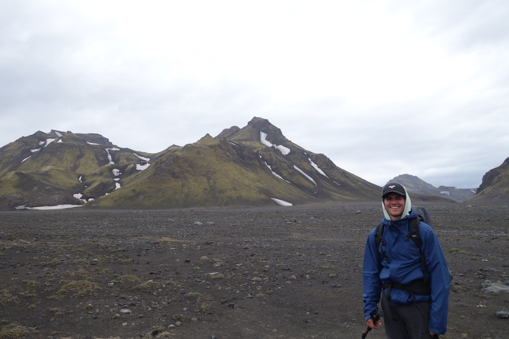

|
Tillman James
Hey! I'm Tillman James and I am a 2nd year Master's Student at Washington University in St. Louis where I am studying System Science and Mathematics with a focus in Control Systems and Machine Learning. I am passionate about utilizing mathematics and technology to extract insights out of data!
|

|
|
A little about myself ...
|
|
Hiking, biking, running...pretty much andything outdoors that involves a little bit of mental stamina interests me. My true passion is long distance running! I have been running since I was a kid and was registered for the Charleston Marathon in January of 2022! This was canceled because of COVID and I'm currently looking for anothe marathon to train for! Long distance running is where I can escape and let my mind wonder. I feel that it is much more of a mental pursuit than most sports and this is what excites me about it! In addition to this, I am an avid fly fisherman. After fishing for the first time at the age of 10, I was hooked! I spent a lot of time flying the various creeks, streams, and rivers of Western North Carolina during middle and high school!
|
|
I enjoy applying my knowledge of mathematics and technology to real-life problems. I really enjoy the field of optimization, machine learning, and data science! There are so many cool problems and an even wider variety of solutions that can come from using these techniques. Every problem excites me and is a learning experience that I can benefit from. Generally I am willing to tackle any task and really enjoy working with others to accomplish that specific goal. I have academic experience developing and implementing machine learning algorithms for a wide variety of data sets. In addition to this, I have a very strong mathematical foundation. When confronted with a challenging problem, I am the type of person to break it down, understand the details, and formulate a data driven solution with ease and little intimidation.
Languages and Skills
- Python
- Pytorch
- Tensorflow
- Sci-Kit Learn
- Keras
- Java
- Matlab
- Auto Desk Revit
|
|
Work Expirence:
Incoming Machine Learning Intern - Actionfigure - Washington D.C. - May-August 2022
Electrical Engineering Intern - EXP - Orlando Florida - May-August 2021
Bike Mechanic - Pedling Pelican - Hilton Head, South Carolina - May-August 2020
Current Research:
- Deep Learning for diagnosis of Post-Traumatic Elbow Disease
Personal Projects:
- Spotify Small Batch Playlist Generator
- Autonomous Driving RC Car
- Red Wine Classifier
|
Contact Me!
|